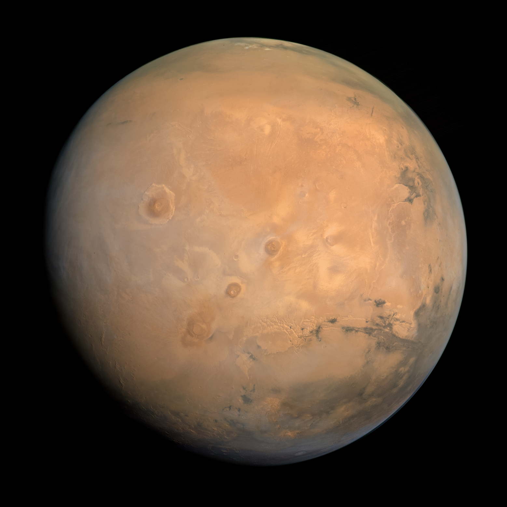

orbiter. The Tharsis Montes can be seen at the
center, with Olympus Mons just to the left
and Valles Marineris at the right.
Overview
Mars is the fourth planet from the Sun, often called the Red Planet because of its rusty, iron-rich surface. It is one of the most studied planets due to its potential to have once supported microbial life. Mars has a thin atmosphere, seasonal weather patterns, and the largest volcano and canyon system in the Solar System.
Orbit & Distance
Mars orbits the Sun at an average distance of 228 million km, completing one orbit every 687 Earth days. It sits at the outer edge of the Sun's habitable zone. Mars has an elliptical orbit, meaning its distance from the Sun varies more than Earth's does over the course of a year.
Atmosphere
Mars has a thin atmosphere made up mostly of carbon dioxide, with small amounts of nitrogen and argon. This atmosphere is too thin to trap much heat, which is part of why Mars is so cold. It also means Mars cannot support liquid water on its surface today, since the low pressure causes water to evaporate or freeze quickly.
Surface
Mars has a reddish surface, colored by iron oxide, or rust, in the soil and rocks. It is home to Olympus Mons, the largest volcano in the Solar System, standing about 22 km high. Mars also has Valles Marineris, a canyon system that stretches over 4000 km long, far larger than Earth's Grand Canyon.
Temperature
Mars is cold, with average surface temperatures around -60°C. Temperatures can range from about 20°C at the equator during the day to -125°C near the poles. This wide range comes from the thin atmosphere, which cannot hold onto heat well.
Moons
Mars has two small moons, Phobos and Deimos. Both are irregularly shaped and thought to be captured asteroids. Phobos orbits close to Mars and is slowly spiralling inward, likely to break apart or crash into the planet in tens of millions of years.
Exploration
Mars has been visited by more spacecraft than any other planet besides Earth. NASA has landed several rovers on its surface, including Curiosity and Perseverance, which study the planet's geology and search for signs of past life. Other agencies, including ESA and China's CNSA, have also sent missions to study Mars.